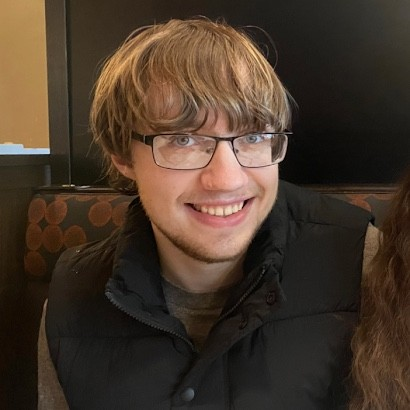

I grew up in the Seattle area my entire life, and naturally once I graduated high school I began attending the University of Washington. I initially had an interest in computer science, but after engaging with professors on accessibility research I quickly found my place in the department of Human Centered Design & Engineering. Last summer I interned at Northwesetern Mutual based in Milwaukee, WI as an accessibility designer. I am now in my senior year and I am eagerly applying for new positions as I finish my degree.
ABOUT ME
